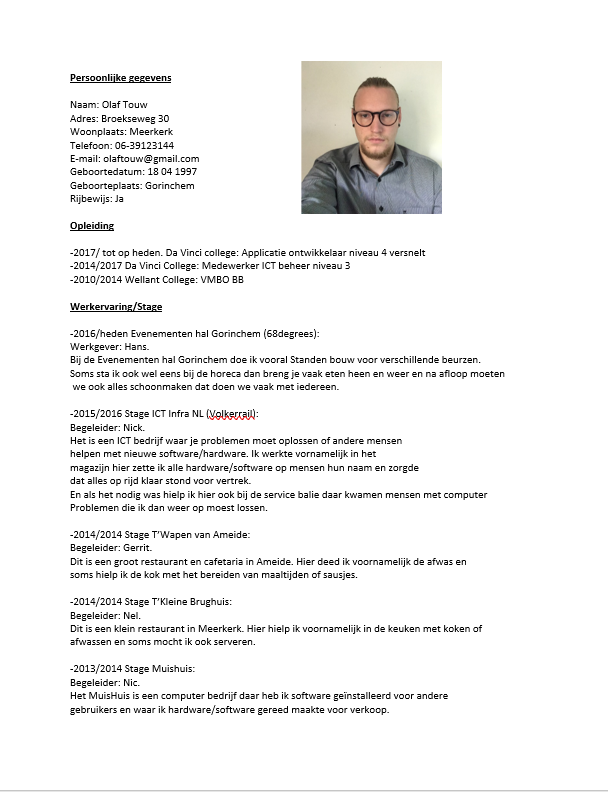
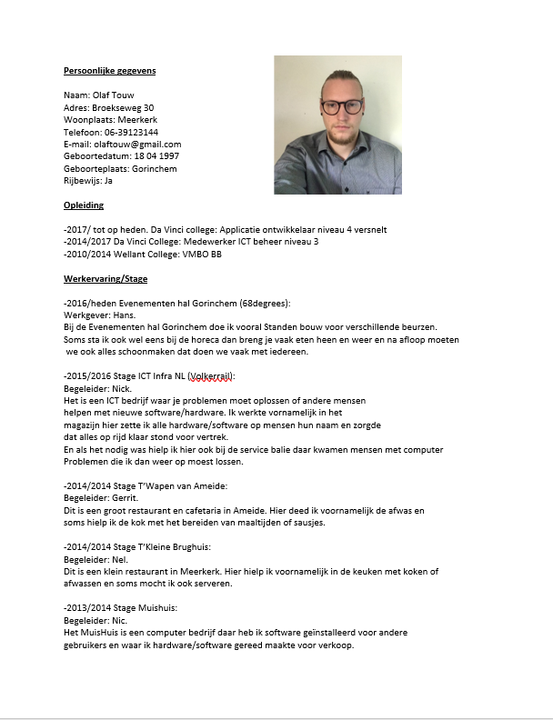

Over
Hallo mensen mijn naam is Olaf Touw. Ik ben 20 jaar ik zit op het Da Vinci College in Gorinchem. Mijn hobby's zijn Longboarden, gamen en met vrienden gezellig een biertje drinken in de stad.
Hallo mensen mijn naam is Olaf Touw. Ik ben 20 jaar ik zit op het Da Vinci College in Gorinchem. Mijn hobby's zijn Longboarden, gamen en met vrienden gezellig een biertje drinken in de stad.
